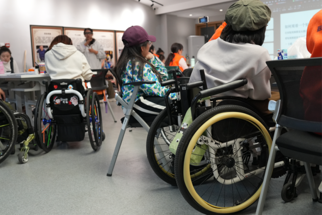
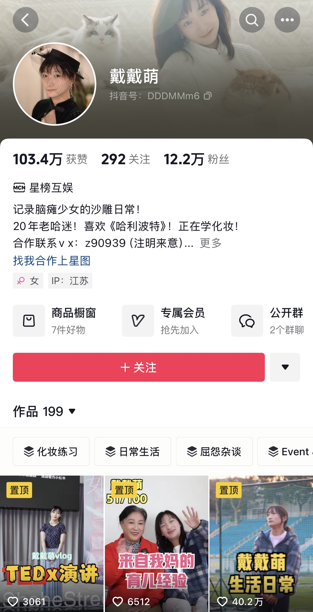
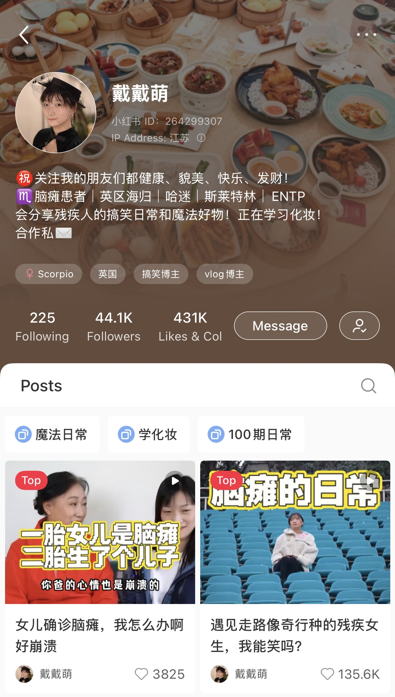
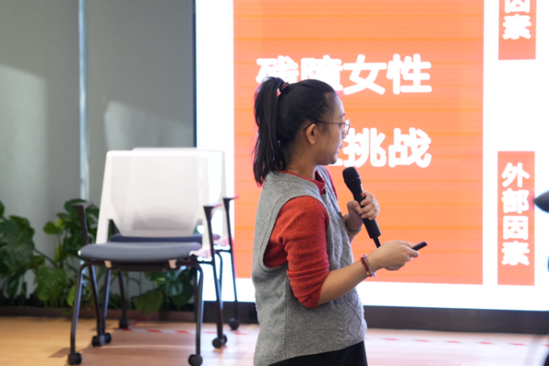
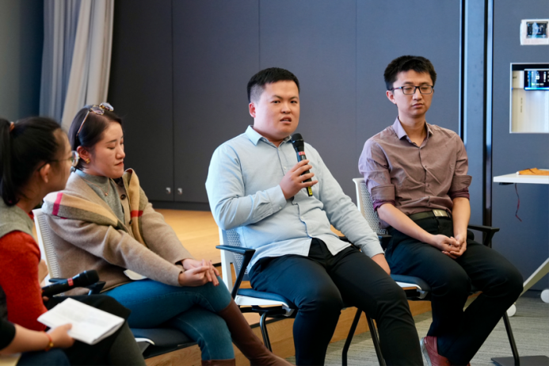
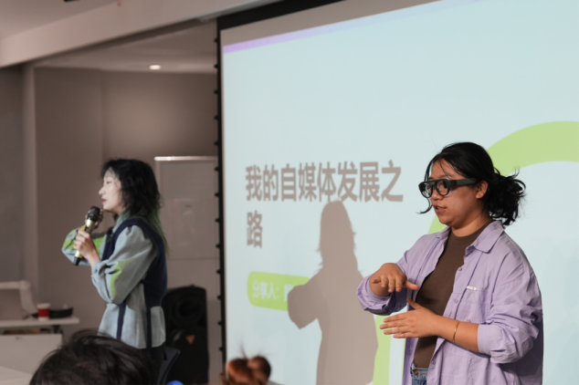
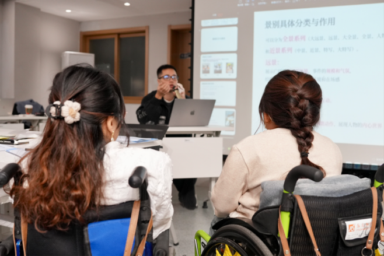

"I see cerebral palsy as my pride. It brings me attention and recognition online," said Dai Ming.
Known online as "Dai Dai Meng," the 34-year-old is a full-time online content creator. For Dai, her life as a person with disability has become the theme of her videos in her journey as an internet influencer.


With nearly 200 video posts across social media platforms, Dai humorously refers to herself as a "unique comedy-focused disability blogger." Her content spans topics from challenges commonly faced by people with cerebral palsy, such as job hunting and physical rehabilitation, to her personal explorations, including attending cosplay conventions and practising makeup skills.
In her videos, Dai openly embraces her impairment, marking it prominently. "I don't want to play the pity card. I want to show the diverse lives of people with disabilities," she asserts.
Some netizens questioned her approach.
"On social media, beauty bloggers show their looks, and makeup bloggers advertise their connections with celebrities," Dai responded, "Why shouldn't we, disabled individuals, share our experiences and show 'I can do what you can do?'"
"That's what true equality and inclusion is," she said.
The internet offers a gateway for people with disabilities to move beyond traditional employment options, expanding their horizons and accessing more diverse career paths.
But how to make a living through online platforms remains a significant question for people with disabilities considering flexible internet-based work.
As followers grow, bloggers with disabilities have explored avenues to generate income, such as sponsored posts and product placement.
Yet, ethical dilemmas also arise. "Is it right to profit from my identity as a disability blogger?" Dai wondered.
A conversation with a leading influencer on Douyin (Chinese TikTok) helped ease her concern. "Don't worry," the influencer advised, "The money you earn will ultimately contribute to disability advocacy and empowerment."
After three years of exploration, Dai now has over 200,000 followers across various platforms. She is one of 386 content creators with the word "disability" in their usernames or bios on Douyin.
But, it requires more than individual capabilities to survive the digital livelihood.
"When discussing internet-based careers for people with disabilities, it's not just about individual capabilities," says Peng Yujiao, founder of Kunli BEST&Fun studio and a woman with cerebral palsy. "Environmental support, teamwork, and guidance from mentors are equally important."
Kunli BEST&Fun studio is a social enterprise that specializes in the integration of the disabled and the sustainable development of the special needs population. It has helped 205 people with disabilities develop their careers since 2021.

This shift aligns with broader changes in corporate social responsibility and government policy. China has taken measures to promote the employment of people with disabilities from 2022 to 2024. An action plan issued by the General Office of the State Council aims to achieve employment for one million people with disabilities within three years.
By the end of 2023, over 1.1 million jobs had already been created, according to data from the China Disabled Persons' Federation (CDPF).
According to Xie Jingwei, head of the CDPF's employment services platform, the CDPF has introduced inclusive policies to guarantee the employment of people with disabilities since 2007. These include a quota system that requires employers to hire no less than 1.5 percent of disabled employees, or to make contributions to a disability employment fund.
Besides, employment skills training, on-the-job skills improvement training, or entrepreneurship training for unemployed working-age disabled persons have been carried out, with government subsidies for training fees and living and transportation expenses.
Meanwhile, homes for people with disabilities have been set up in neighborhoods and communities to support the livelihood of the special needs group.

Zhang Leiming, an HR representative of Cummins China, a diesel engine manufacturer, explains his company's inclusive hiring approaches. "We either open suitable posts to or create new posts for persons with disabilites," he said.
Xie Jingwei also noted partnerships with short-video platforms like Douyin and Kuaishou (Chinese Kwai) will encourage traffic boosts for content creators with disabilities.
Dai has benefited from this internet traffic boost since she launched her first Douyin account in 2021, getting 40,000 followers in the first month. Now, with her growing expertise, she is guiding others with her experiences.
In November 2024, she joined Kunli BEST & Fun Studio's 'Dream Workplace' winter camp as a mentor, delivering career development speeches to people with disabilities and teaching them how to use AI tools for content creation, such as visual and audio creation, fast-track research, etc.


Xie added CDPF's collaborations with e-commerce giants such as Alibaba and JD.com aim to provide storefront subsidies and promotional opportunities for disabled entrepreneurs.
Marking International Day of Persons with Disabilities on December 3, 2024, Alibaba, in partnership with CDPF, announced the initiatives for disabled merchants, which include free access to AI-powered tools offering features such as content creation, data analytics, and business management.
"We encourage people with disabilities to embrace AI and other assistive technologies to overcome physical limitations and adapt to new trends," Xie says. "By integrating talent cultivation and job creation, we aim to empower people with disabilities through technology and innovation."